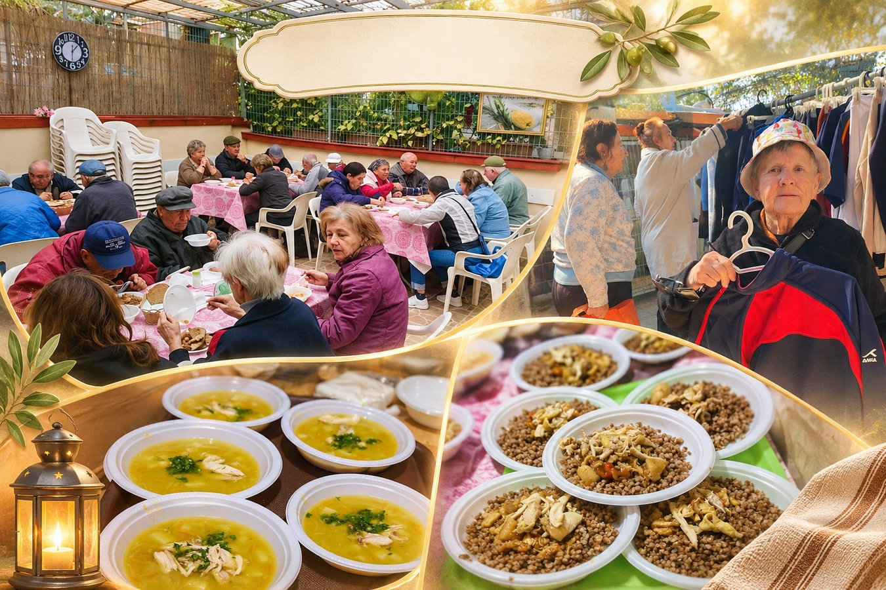

Hope in Everyday Ministry
Dear brothers, sisters and friends!
Another year is drawing to a close. For each of us, it has been filled with its own concerns, experiences, hopes and trials. Yet amid everything that happens, one thing remains unchanged: the human need for care, comfort and God's support.
Our ministry in Be'er Sheva continues. The charitable dining room welcomes people who need a hot meal and human kindness. We continue to help new immigrants, older people, Holocaust survivors, low-income families and those facing difficult circumstances in life.
Every request for help has its own story. For some, food assistance is important; for others, clothing or a hot meal. Sometimes a person especially needs simply to feel that they have not been forgotten and that there are people nearby who are ready to listen and offer support.
It is precisely such seemingly small acts that make up genuine ministry.
We thank God for the opportunity to continue this work and for everyone who takes part in it, helps, supports and prays.
Caring for People Every Day

The Charitable Dining Room
A hot meal is more than essential assistance. For many of our visitors, the dining room has become a place to see familiar faces, talk, feel cared for and hear about God and His mercy.
People of different ages, backgrounds and life experiences meet around the same table. Some come regularly; others seek help during a particularly difficult period.
We strive to ensure that everyone who comes to us feels not only practical support but also respect for their dignity.
Sometimes an ordinary meal, prepared and served with love, means much more than it may seem at first glance.
Supporting Older People
Caring for older people, including Holocaust survivors, holds a special place in our ministry.
Behind them lie many years of life, difficult memories, losses and trials. Today, many of them need not only material assistance but also attention, companionship and a sense of their own worth.
We want each of them to know that their life, their story and their dignity matter.

Helping New Immigrants
Moving to another country is the beginning of a new life, but along with hope it often brings many difficulties.
A new language, an unfamiliar environment, finding work and the need to establish everyday life all take time and strength.
We continue to support new immigrants by helping them with essential items, clothing, food and documents, to the extent our resources allow.
It is important to us that people who have recently arrived in Israel know that they are not left alone with their difficulties. That God loves them.